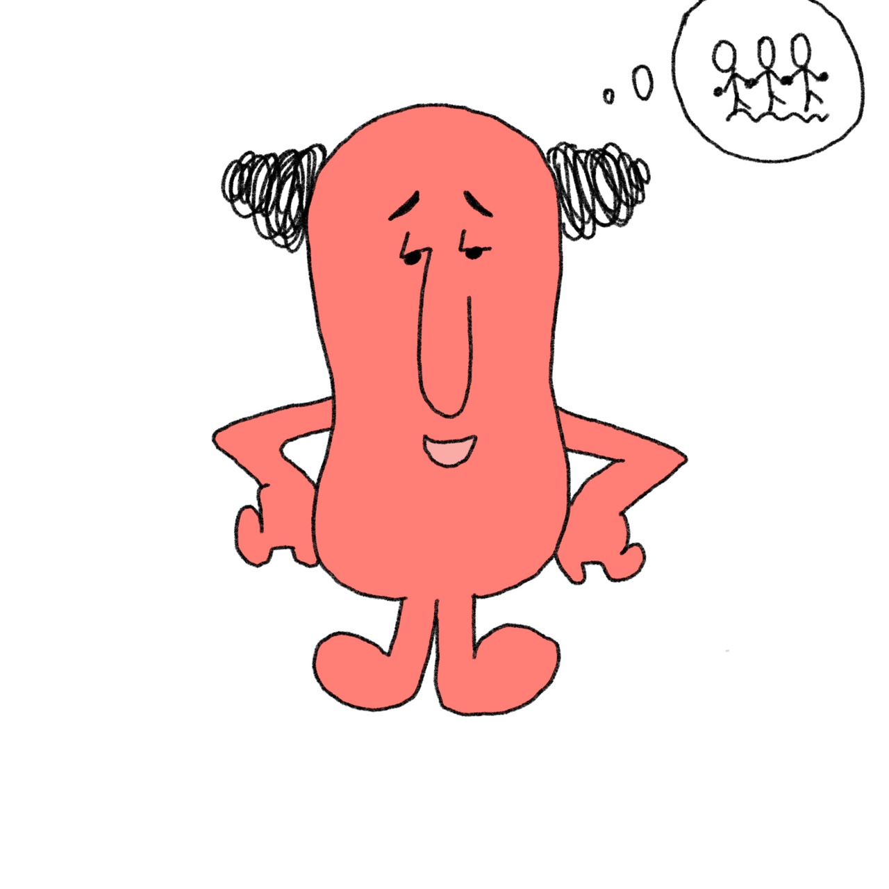

INFJ - 사회복지학과
- 내향적, 직관적, 감정적, 판단적 성격특성을 가진 사람입니다.
- 그들은 깊은 사려와 상상력으로 삶에 접근하는 경향이 있습니다. 그들의 내면의 비전, 개인적인 가치, 조용하고 원칙적인 인본주의는 모든 일에서 그들을 인도합니다.
- 사회복지학과 사회복지 현장에서 주요한 역할을 수행하는 전문 사회복지사와 사회복지 정책 전문가를 양성하는 것을 교육 복표로 하고 있습니다. 이를 위해 기초적인 사회과학 지식을 바탕으로 개인, 가족, 집단, 조직, 지역사회의 사회적 기능 향상을 돕기위해 필요한 이론교육과 실습교육을 병행하며, 국제교류 및 국제협력을 활성화 하여 글로벌 시대에 부흥하는 사회봉사의 이념을 실현하도록 노력하고 있습니다.